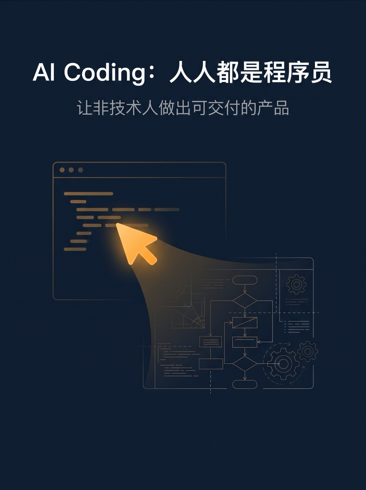
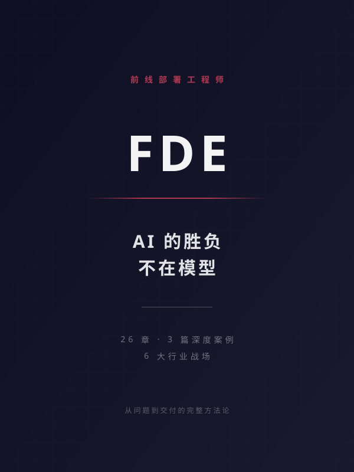
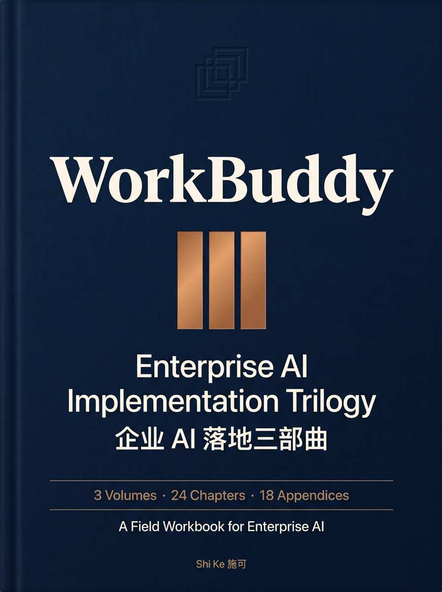
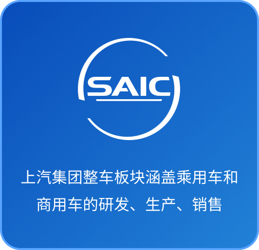

水滴跃动 Dropleap · 企业级 AI 落地服务
为企业提供 AI 战略咨询、Agent 方案设计、应用工程到部署运营的端到端服务。技术栈涵盖大语言模型（LLM）应用、Multi-Agent 编排、Tool Use、RAG 检索增强、长期记忆与 Agent 评估体系。重点解决 AI 在真实业务场景下的可靠性、可观测性与可评估性，帮客户把 demo 变成可规模化运营的生产力。
连续创业者 / 水滴跃动 Dropleap 创始人 / 企业级 AI 实践者
16 年横跨软件工程、产品创新与商业经营，持续推动从 0 到 1 的产品构建与组织实践。现聚焦企业级 AI Agent 与 GEO，将新技术转化为可交付、可运营、可持续迭代的业务能力。
为企业提供 AI 战略咨询、Agent 方案设计、应用工程到部署运营的端到端服务。技术栈涵盖大语言模型（LLM）应用、Multi-Agent 编排、Tool Use、RAG 检索增强、长期记忆与 Agent 评估体系。重点解决 AI 在真实业务场景下的可靠性、可观测性与可评估性，帮客户把 demo 变成可规模化运营的生产力。

让非技术人做出可交付的产品。
在 GitBook 阅读 ↗
AI 项目的胜负，在部署，不只在模型。
在 GitBook 阅读 ↗
3 卷 24 章 / 18 附录 / 6 序与目录的企业 AI 落地工作手册,定位为可切片、可重印的培训与咨询交付件。
在 GitBook 阅读 ↗面向拓店选址决策的结构化尽调框架。覆盖点位 / 竞品 / 客流 / 客群 / 同类门店 / 风险 / 财务 / 谈判 / 行动 9 维度及 6 大品类（奶茶 / 咖啡 / 快餐 / 正餐 / 麻辣烫 / 烘焙）行业基准，所有数据来自联网搜索与品类基线，支持单地址深评与多地址横向对比。
在 SkillHub 查看 ↗将提示词发送给你的 AI 安装该 skills
请根据 skillhub.cn/install/skillhub.md，安装 @user_5256a507/site-intelligence-report。
面向中文用户的结构化塔罗抽牌与解读框架：78 张韦特全牌 + 18 个经典牌阵。抽卡由用户主动完成，LLM 按牌义库结构化解读。全程娱乐性质定位，不预测命定论，不涉及医疗 / 法律 / 投资建议，牌图来自开源的 Liora Moon 项目（github.com/shike/lotus-tarot）。
在 SkillHub 查看 ↗将提示词发送给你的 AI 安装该 skills
请根据 skillhub.cn/install/skillhub.md，安装 @user_5256a507/rider-waite-cn。
施可，水滴跃动（Dropleap）创始人，中国科学技术大学软件工程硕士，连续创业者。16 年职业经历横跨软件工程、互联网产品、创业与企业经营。从软件工程师和技术管理者起步，先后在 NCS（新电信集团）、同程艺龙、哈啰出行等企业承担技术与产品职责，逐步形成以工程能力理解技术边界、以产品思维定义用户价值、以经营视角推动组织落地的复合工作方法。
曾从零创办互联网体育项目，完成从产品构建、团队组建到机构融资的完整创业过程；此后担任邻汇吧 COO，负责公司战略、组织协同与业务经营，并推动数字化产品和新业务的建设。这些经历使其长期工作在技术、产品与商业的交界处，既关注产品能否被真正使用，也关注商业模式、组织能力和交付体系能否支撑长期增长。
2026 年创立水滴跃动，聚焦企业级 AI Agent、GEO 与应用工程。依托跨技术、产品和商业运营的复合经验，为企业提供从场景识别、AI 战略、Agent 方案设计到工程交付和部署运营的端到端服务。关注的不只是模型能力或概念验证，而是 AI 系统在真实业务中的可靠性、可观测性、可评估性与持续运营能力，推动 AI 从演示原型走向可复用、可规模化的业务系统。
在生成式引擎优化（GEO）方向，持续研究 AI 搜索成为用户决策入口后，品牌如何构建可被模型准确理解、可信引用并稳定推荐的知识体系。GEO 不只是内容投放或关键词优化，而是涉及品牌事实、内容结构、权威信号和持续评估的系统工程。围绕 AI 产品化与一线交付持续写作，著有《WorkBuddy:企业 AI 落地三部曲》《AI Coding:人人都是程序员》《FDE:AI 的胜负不在于模型》，并通过行业演讲分享产品、技术与商业实践。
LLM 应用开发、Multi-Agent 编排、Tool Use 与 Function Calling、RAG 检索增强、Agent 评估与可观测性体系
从用户洞察到 PRD 落地，从 MVP 到规模化迭代，跨技术、产品、商业的复合视角
全国扩张、跨城市团队搭建、组织设计与绩效体系；大客户经营全流程（洞察、方案、谈判、长期关系），服务过小米汽车、小米 3C、益禾堂、小天才、卡旺卡等头部品牌。
业务指标体系设计、客流与 ROI 分析、A/B 实验、数据复盘转方法论
行业峰会主题演讲、品牌故事讲述、技术内容写作与媒体传播
水滴跃动 Dropleap · 企业级 AI 落地服务商
聚焦企业级 AI 落地。从场景识别、AI 战略到 Agent 方案设计、工程交付与部署运营，把大模型与 AI Agent 转化为嵌入真实业务流程、可靠且可衡量的业务能力。
邻汇吧
负责公司战略、组织协同与全面经营；推动 Location 数智化选址平台从 0→1 建设，与浙江大学共建研究中心，服务小米汽车等头部客户；主导新业务从探索走向规模化运营。
哈啰酒店 · 哈啰出行
哈啰出行 BU 核心决策成员，从零构筑 B 端与 C 端产品体系及会员增长飞轮，基于 AIPL 模型打通线上线下增长闭环。
同程网络科技 · 同程艺龙（HK:0780）
国际酒店事业部产品与技术双料负责人，对事业部业绩负责，带队持续打磨前端体验与后端交付效率。
苏州踢来踢去网络 ·「球长部落」
首次创业，从 0 到 1 全栈操盘。2016 年 1 月获紫辉创投 300 万天使轮投资，估值 2000 万。
新电信息科技（NCS）· 方正国际软件
从应届生成长为技术骨干。NCS 期间多次赴新加坡负责项目交付；方正期间主导百胜餐饮加盟发展系统等大型企业级项目。


任 COO 期间主导搭建，先后服务小米汽车、小米 3C、益禾堂、小天才、卡旺卡等头部品牌。围绕「客户洞察 → 方案设计 → 落地执行 → 数据复盘」四环节，形成可复制的服务 SOP，把头部品牌的渠道服务沉淀为方法论。
慢闪店标准化运营模型，覆盖选址、搭建、运营、复盘全周期。把数据驱动的决策沉淀成可复用的商业方法——这种「方法论可被产品化、可被规模化复用」的思路，也直接影响了我现在做 AI Agent 产品的设计哲学。

破界·2024 刀法年度品效峰会 · 上海
第五届 TBI 杰出品牌创新节 · 「成于渠道」专场 · 上海
第五届 TBI 杰出品牌创新节 · 闭门早场开杠 · 上海
欢迎就 AI Agent / LLM 应用、创业合作、产品方法、大客户经营等话题与我交流。

扫码添加施可个人微信